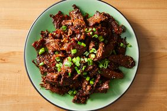

<!Doctype hmtl>
<hmtl>
    <head>
      <title>Beef Bulgogi</title>
        <meta charset="UTF-8">
        <meta name="description" content="Review page using recipes">
        <meta name="keywords" content="Recipes Odin Project">
        <meta name="author" content="Daniel Sergent">
        <meta name="viewport" content="width=device-width, initial-scale=1.0">
    </head>
    <body>
        <a href="../index.html">Home</a>
        <h1>Beef Bulgogi</h1>
        
        <h3>Korean Style Barbecue Recipe</h3>

        <ul>
            <li>1.25 pounds boneless beef short ribs, sliced across the grain in 1/8-inch thick slices</li>
            <li>4 cloves garlic, finely crushed</li>
            <li>1/4 cup grated yellow onion</li>
            <li>1 tablespoon freshly grated gingerroot</li>
            <li>1 tablespoon toasted sesame oil</li>
            <li>1 tablespoon light brown sugar, or to taste</li>
            <li>1/3 cup freshly grated Asian pear</li>
            <li>1/4cup soy sauce</li>
            <li>1 tablespoon Korean red pepper flakes</li>
            <li>1/2 teaspoon kosher salt</li>
            <li>1 tablespoon vegetable oil, plus more for skillet</li>
            <li>2 cups steamed rice</li>
            <li> 2 sliced green onion</li>
        </ul>

        <p>
            <strong>1. </strong>Mix garlic, grated onion, grated ginger, toasted sesame oil, and brown sugar together in a mixing bowl. 
            Stir in grated pear, soy sauce, and red pepper flakes.
        </p>
            
        <p>
            <strong>2. </strong>Transfer meat to marinade and toss to coat on all sides. Cover and refrigerate, 1 to 2 hours.
        </p>
            
        <p>
            <strong>3. </strong>Season meat with salt and a drizzle of vegetable oil. Then toss.
        </p>
        
        <p>
            <strong>4. </strong>Brush a cast iron skillet with a little vegetable oil and place over high heat. 
            When the skillet is very hot, add beef in a single layer and cook until meat begins to caramelize around the edges 
            and moisture begins to evaporate, 2 to 3 minutes per side. Serve over hot rice and top with green onion slices. 
        </p>


        </body> 
<hmtl>